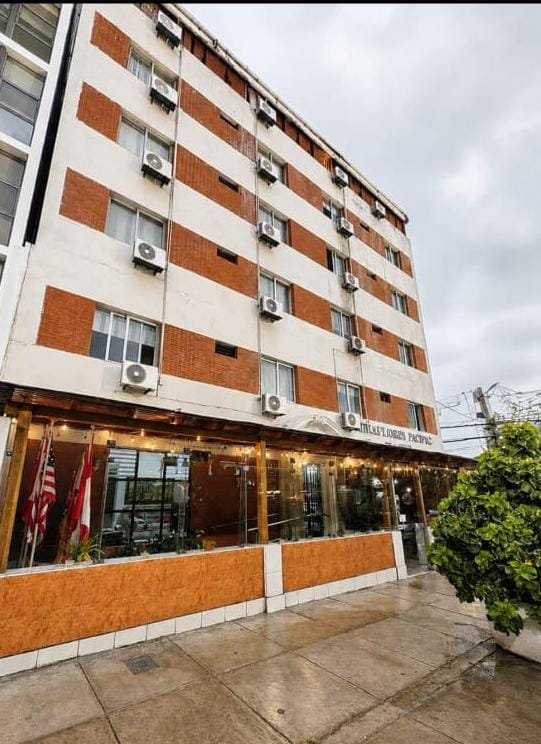

Bienvenidos a Miraflores Pacific Hotel
Disfruta de una experiencia única de descanso, confort y excelente servicio en el corazón turístico y comercial de Miraflores.

Nuestra Sede Principal
Ubicados en una zona accesible y tranquila de Miraflores. Contamos con instalaciones modernas diseñadas para garantizar la mejor estancia durante tu viaje de negocios o vacaciones.
Servicios Destacados para Nuestros Huéspedes
-
Recepción 24 horas: Atención personalizada y registro durante todo el día.
-
Wi-Fi de Alta Velocidad: Conexión estable e ilimitada en todas las instalaciones y habitaciones.
-
Estacionamiento Privado: Monitoreado las 24 horas con cámaras de seguridad.
-
Ubicación Estratégica: Excelente cercanía a zonas turísticas, restaurantes y al Malecón de Miraflores.
-
Traslado y Asistencia: Servicio de transporte y guía turística bajo previa solicitud.
Visítanos en Miraflores
Av. Grau 191, Miraflores, Lima 15074, Perú
CÓMO LLEGAR
Miraflores Pacific Hotel
Av. Grau 191, Miraflores, Lima 15074, Perú
Aeropuerto Internacional Jorge Chávez
Ubicado a 18 km aprox. El trayecto toma entre 35 a 50 minutos en taxi o transporte privado a través de la Circunvalación del Callao y Av. Costa Verde (Bajada Balta).
Otros medios de transporte
A solo 2 cuadras del Corredor Azul (Av. José Larco / Av. José Pardo - Paradero Berlín) y a 10 minutos a pie de la Estación Benavides o Ricardo Palma del Metropolitano.